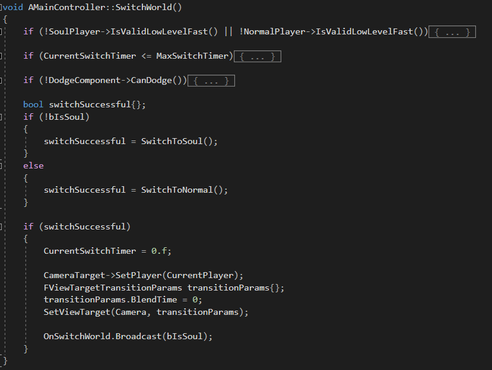

As a final test before doing our internship, we do one more groupproject, much larger than any other project we have done before in our studies at DAE. During summer, we are given the choice to either start on our own prototype, which we then present to a jury that decides if we can keep working on it; or we wait untill the start of the academic year to choose a project from a list given to us by school. I teamed up during summer with the people listed below.
This time, the idea came from student Steven, who took up the role of project lead. He was the one who had the last word and took final decisions. However, that did not mean he was not open for discussion, and especially during the first few weeks, a lot of game mechanics and story elements have been adapted and changed during such discussions. The whole group took part in these discussions.
I focused mainly on player and enemies. The player needed to be able to switch from normal world to soul world and back, having different attacks in each world. Damage needed to be calculated depending on several factors, and mainly for the player, sometimes different behavior was to be attached to taking damage. For example, the soul had to snap back to the body whenever the body was hit.

Enemies needed to be as modular as possible, as the ultimate goal is to have many different creatures and monsters. In the
demo project, there are creatures and two bullethell spawners. The creatures are derived from the same class, and the spawners are also based on one class.
I also made the AI for the enemies, using Unreal Engine's behavior tree system. I had a lot of fun making a normal and aggressive variant, where the aggressive variant would be able
to jump over gaps using a new attack. To differentiate even more between the types of enemies, I worked out how to use UE's navigation system more in-depth, as some had to be able to
float over gaps, while others shouldn't be able to do so.
To keep modularity as high as possible, weapons, attack components, dodge components etc. are all different classes that are capable of working together. Usually, UE4's data assets
where used to feed all necessary info into classes.
Together with the player and enemy classes, I was busy setting up their animation state machines.
While there is not much dialogue in the game just yet, I did write the dialogue during the tutorial and the hints on the puzzle stones in the dungeon. The ultimate goal is to have a system where every run will give some different dialogue, and reaching important milestones will give you a new part of the story. However, with just three months time, this is something for the future.
Right now, Curse of the Pyramid is pretty much a demo. In three months time, we have been able to do an incredible amount of work, but the game is not done yet. However, the team is motivated to keep working on the project during free time and is looking for opportunities to work on it fulltime. Who knows, maybe in a few years we will have bossfights, multiple dungeons, multiple dungeon layers...
The Itch.io page of the game.